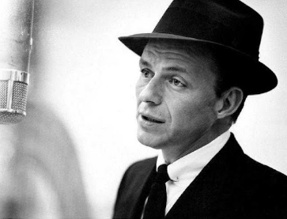

Conheça a trajetória de um dos maiores artistas da história da música mundial.
Frank Sinatra foi cantor, ator e ícone cultural. Conhecido como “The Voice”, marcou gerações com sua presença sofisticada, músicas clássicas e uma voz considerada uma das maiores da história.
Sua carreira atravessou décadas, influenciando o jazz, o swing e a música romântica. Sinatra se tornou símbolo de elegância e excelência artística.

Uma das músicas mais famosas já feitas.
O clássico eterno da era dourada do jazz.
O hino definitivo da cidade de Nova York.